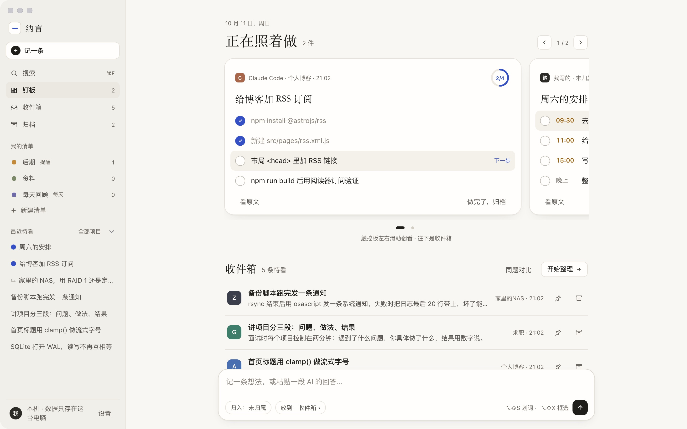
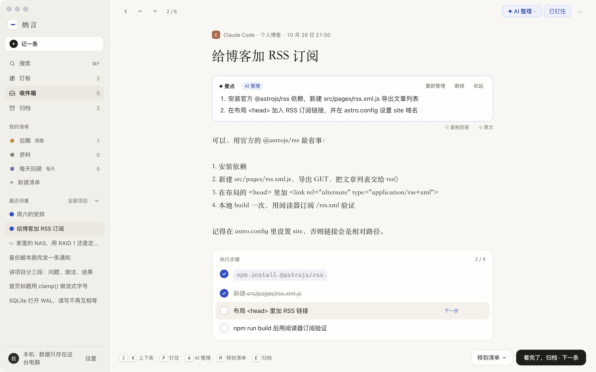
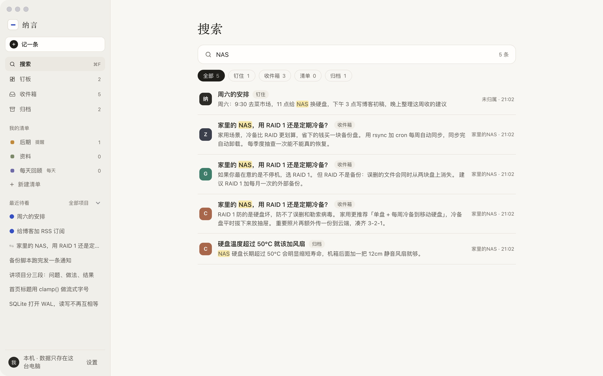
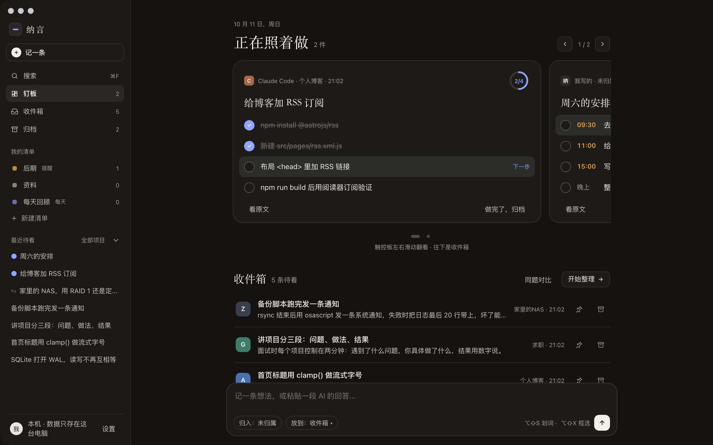

值得的话，
值得一个去处。
你每天和好几个 AI 来回说话，真正有用的往往只有几句。纳言把这几句接住，放进一个只属于你的收件箱，再陪你把它们一条条做完。

一条话的四站
从听到一句好建议，到把它做完
- 1
接住
在任何 App 里选中那段话，按一下快捷键，它就进了收件箱，来源、项目、窗口一并记下。
- 2
收件箱
新来的话先排队。想看的时候一次只看一条，没有红点催你。
- 3
整理
钉到钉板马上做，放进清单以后再看，或者直接归档。几家 AI 说法不一，就放在一起逐条对比。
- 4
做完
长回答拆成能勾选的步骤，命令一键复制。做完归档，随时能搜回来。
钉板
今天要做的，
钉在最顺手的地方
打开纳言先看到钉板：正在照着做的几件事，每件都带着步骤和进度。收件箱在它下面排队。
- 说一句「9 点开会，下午 3 点去医院」，就能排成带时间的清单
- ⌘⏎ 一下钉上去，不用 AI 也能拆
阅读
原文还在，
步骤可勾
每一条都保留 AI 回答的原始排版，下面是拆好的执行步骤。点「✦ AI 整理」可以提炼要点、清理排版或重起标题，原文永远不改；点「回到来源」能跳回当初那个窗口。
- J / K 上下翻，E 归档，P 钉住，A 打开 AI 整理
- 可以写自己的想法、挂上附件

同题对比
一个问题问三家，
逐条挑
把几家 AI 的回答放进一组，按段落并排。好的点「采纳」，不要的划掉，最后汇成你自己的结论。
搜索
几个月前收的那句，
还找得到
⌘F 打开搜索。多个关键词同时匹配，标题优先，命中处高亮。框选截图里识别出的文字也能搜到。

深色
夜里也看得舒服
跟随系统切换深浅色。暖纸一样的配色，在深色下换成低亮度的墨色。

收录方式
那句话在哪，就从哪收
快捷键都能在设置里改，被别的 App 占用时会提示你。
划词
在终端、编辑器、浏览器里选中文字，按快捷键，自动保留段落、列表、表格和代码结构。角落弹出小窗，顺手记一句想法，回车收进来。
框选
回答太长不想一点点选，就框一块。能读到界面文字的直接读，读不到的截图识别，原图一起保存。
剪贴板
在你指定的几个 App 里复制，角落浮出一张小卡，回车收下，Esc 忽略。默认关闭。
需要在设置里打开让 AI 自己记
在 Claude Code、Codex 这类支持 MCP 的工具里说「把这几条记到纳言」，它会拆好逐条写进来。网页上的 AI 对话用浏览器扩展直连桌面端收录。
AI 来源
AI 是加分项，不是门票
理要点、清排版、起标题、拆步骤、同题对比、排清单，每一样都有不靠 AI 的做法。想让它更聪明一点，再选一档。
不用 AI
要点取每段首句，清理排版只去乱码框与紧邻重复，标题取第一句，步骤按行拆。什么都不往外发。
自己的 Key
填你自己的 API Key（存入 macOS 钥匙串），支持 DeepSeek、智谱、OpenAI 兼容接口和本机 Ollama，还能写一段「给 AI 的补充要求」。每个功能单独开关，第一次发送前会告诉你发给谁。
纳言订阅
不用自己申请 Key，打开就能用。还在准备中。
你收进来的话，首先应该只属于你。纳言的隐私原则
为什么叫纳言
「命汝作纳言，夙夜出纳朕命，惟允。」《尚书 · 舜典》
纳言是中国古代的一个官职，管的是言语的出入：把下面的话如实带上去，把上面的话准确传下来。纳是接住，言是那些值得留下的话。
开源 · MIT
代码公开，接口也开放
纳言用 Tauri 写成，代码以 MIT 协议开源。自带一个零依赖的 MCP 服务，接进你常用的 AI 编程工具只要一行命令。
# 接进 Claude Code $ claude mcp add --scope user suggestion-inbox -- node /path/to/nayan/mcp-server.js # 然后在对话里说 把这条建议记到纳言
常见问题
要花钱吗？
纳言免费，代码开源。以后会有可选的「纳言订阅」，只是省去自己配 AI Key 的麻烦，不订阅也能用全部功能。
没有 AI Key 能用吗？
能。默认就是不用 AI，所有功能都有不靠 AI 的做法。
支持哪些电脑？
目前是 macOS 13 或更新、Apple 芯片的 Mac。
第一次打开，提示「无法验证」或打不开？
预览版还没有经过苹果公证，第一次打开会被系统拦下。点「完成」后，打开「系统设置 › 隐私与安全性」，拉到底部点「仍要打开」，输入密码即可，之后就能正常打开。也可以在终端运行 xattr -dr com.apple.quarantine /Applications/NaYan.app。
需要哪些系统权限？
划词需要「辅助功能」，框选需要「屏幕录制」。不给的话对应的收录方式用不了，其他功能照常。提示：覆盖安装新版本后，若系统设置里已勾选但软件内仍显示未授权，请在系统设置中先点「−」移除纳言，再点「＋」重新添加。
浏览器扩展怎么安装？
克隆或下载仓库后，在 Chrome 打开 chrome://extensions，开启右上角「开发者模式」，点「加载已解压的扩展程序」并选择仓库里的 extension/ 目录即可。只要纳言桌面端开着，网页框选就会直接收进收件箱。
数据存在哪里？怎么备份？
在 ~/Library/Application Support/com.nayan.app/inbox.db。拷走这个文件就是完整备份；也可以在「设置 › 关于」里一键导出全部记录（Markdown 或 JSON）。